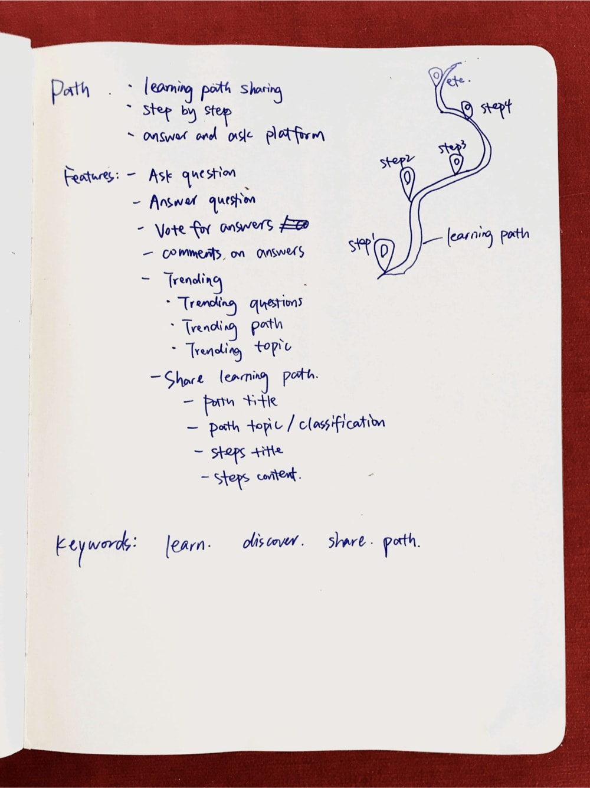
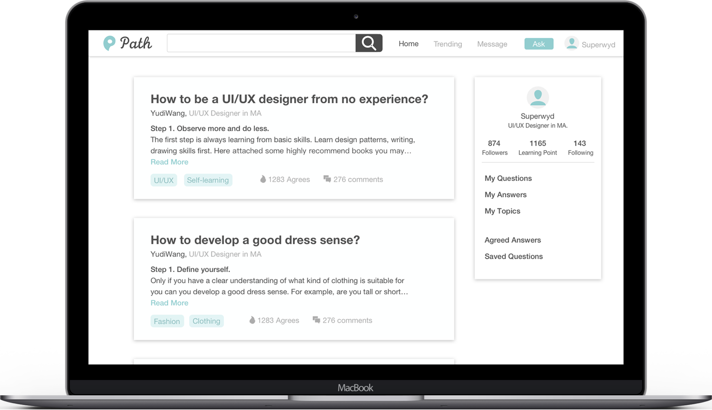

Nowadays we have many kinds of ask and answer questions platform such as Quora and Zhihu. But if users want to search a specific learning process on these sites, the results are sometimes confusing: they still have no idea where to start learning.
I want to solve this issue by letting users share learning paths step by step. In Path, users can search for the learning path they want and check out the results in a much clearer way.
This is an individual freelance project.
Before starting this project, I did an online marketing survey on 60 person from different countries, ages, and jobs and generated the following three personas which can represent our target users:
I always started from sketching ideas on paper. Here is a screenshot of my sketches.
Here are words and images that represent Path straightforwardly.

Here are sketches of Path theme icon and the process I iterated:
Here are all the basic icons I tried in Path.
Here is the structure of question, which is the main component in Path.

I will design iOS and Android platform later. As for now, I created a set of responsive designs for Path.
Users can view answers to specific questions according to users’ favoriate topics, following users, popularity, and hotspot recommendations.

Users can view all the trending questions here. Once they find any interested questions, they can click and answer directly.
Users can view all the trending answers here. They can click “Agree” if they agree with this answer. They can also make comments on answers.
Users can view all the trending topics here. They can sort questions with answers according to the most popular or recent post order.
Users can ask all kinds of question which can be asked step-by-step here.
User need to fill in question title, related topics, and additional comments if needed.
Users can view all the answers to one questions if click on that question title.
In order to avoid the situation that one answer is too long for users to see other answers, users can view full answer or fold it.
Users can also see related questions here.
After finishing my first draft, I conducted 3 rounds of usability testing on 20 people and iterated my design according to feedbacks and comments.
Here attached my first draft home page design.
Here are feedbacks and comments I got about home page:
And here is the final design I have as a comparing reference. I'm currently working on front-end development part of Path with Angular2 framework.
